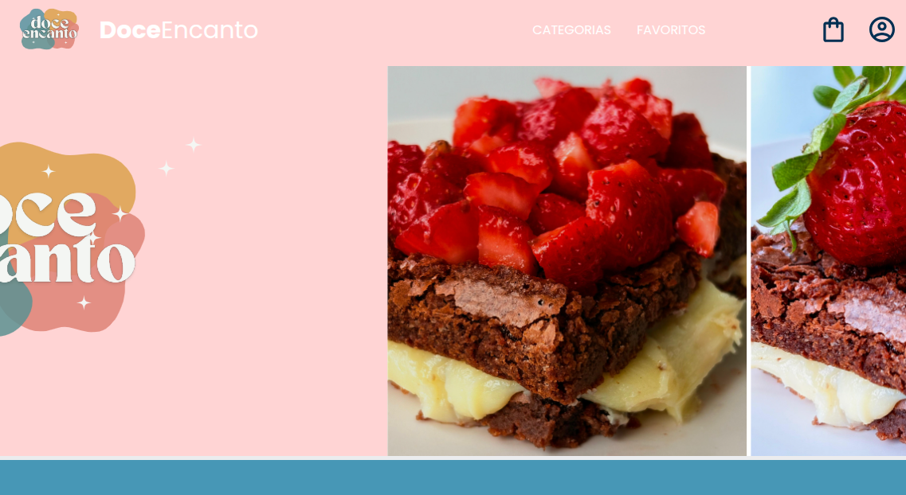
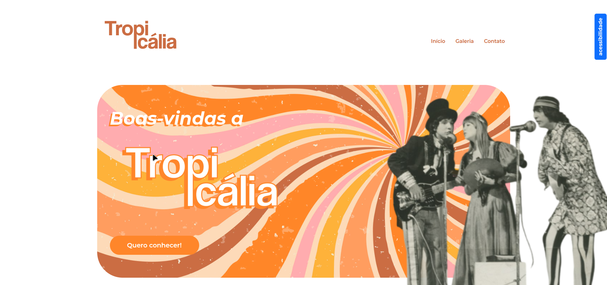
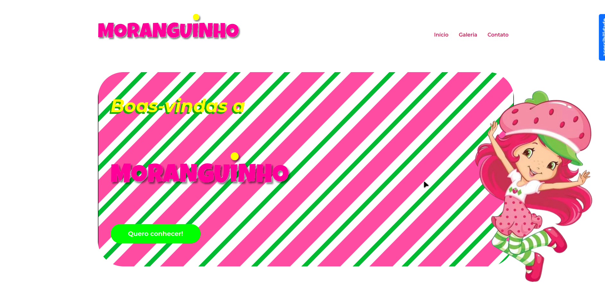
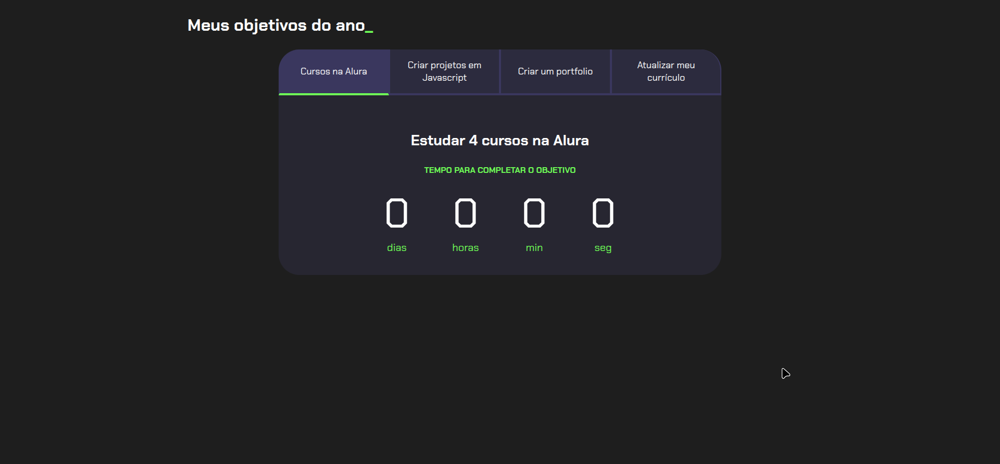
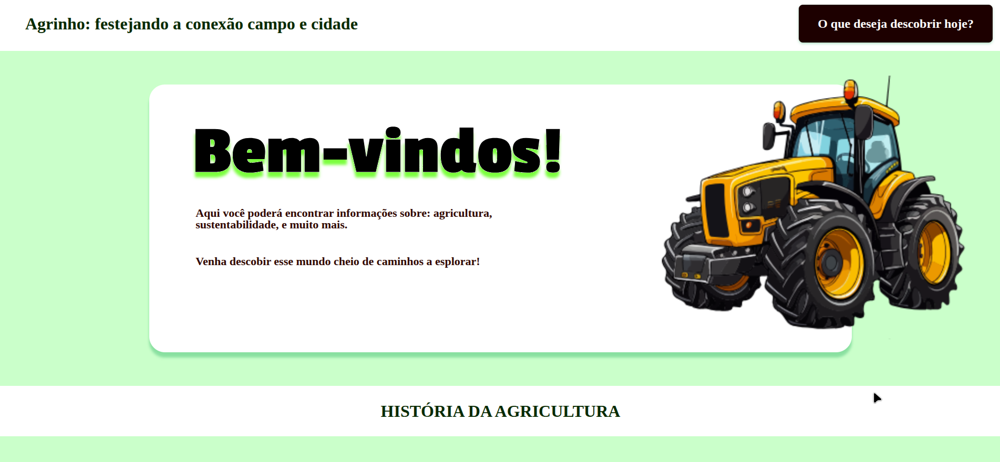
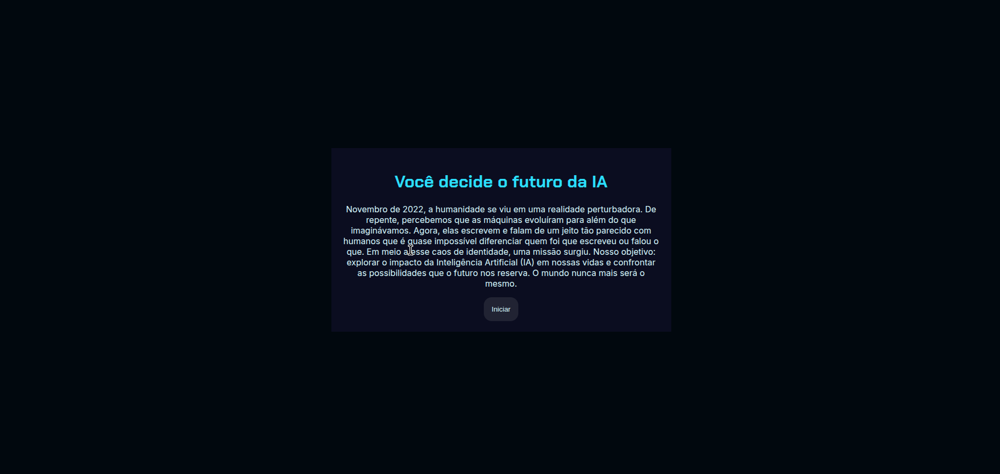
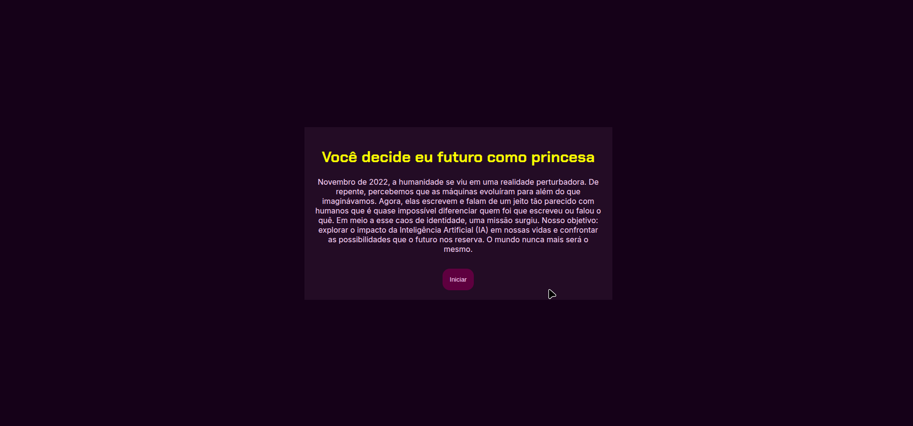

Meus Projetos
Primeiro projeto, site marcelo

O primeiro site do ano, nada mais é que um informativo dos profissionais do Alura. Sobretudo do Marcelo, instrutor do curso. Todo o site foi feito com base nas orientações do instrutor, ou seja, baseado na plataforma Alura.
É um site simples, com designs não muito elaborados, porém com informações pertinentes. Um trabalho divertido que contribuiu com os conhecimentos adquiridos ao longo do ano.
Emily aluna

O site “Emily Aluna” foi criado com base no primeiro site do ano, com algumas diferenças sutis de cor e imagens. Mas mantendo o design simples e sofisticado.
O site possui uma estrutura básica formada por HTML e CSS, que são essenciais para a criação de um site de qualidade. O HTML organiza o conteúdo de maneira lógica, enquanto o CSS proporciona uma apresentação visual atraente. Essa combinação garante uma experiência de navegação fluida e acessível.
Alura Plus

“Alura Plus”, foi o segundo site construído a partir da plataforma Alura, desenvolvido com as orientações da instrutora. Realizamos toda a estruturação com atenção especial aos detalhes. O site apresenta botões interativos e mudanças de cores que enriquecem a experiência do usuário, tornando-a mais envolvente e intuitiva. Essa criação me permitiu aplicar os conhecimentos adquiridos e explorar novas formas de design e funcionalidade.
Alunas

O “Alunas”, é baseado no “Site Marcelo”, com foco em apresentar um grupo de estudos e sua líder. Embora seja montado utilizando HTML e CSS, o site não é responsivo. No entanto, ele incorpora elementos interativos que tornam a experiência do usuário mais envolvente e agradável.
Alura Books

O site foi desenvolvido seguindo as orientações da plataforma Alura, sendo o meu primeiro projeto responsivo. Seu design é simples e harmônico, destacando a plataforma “Alura Books”, do grupo Alura, que oferece uma seleção de livros voltados para o aprendizado técnico.
Biblioteca da Emily

A biblioteca da Emily é um site responsivo, criado para apresentar minha coleção pessoal de livros. Inspirado no “Alura Books”, o site foi reformulado com novas imagens e paleta de cores únicas, dando uma nova cara para a produção.
Flashcards

O “Flashcards” é um site responsivo, ou seja, adapta-se a várias telas, facilitando o seu uso em qualquer lugar. Seu objetivo é cumprido de forma simples: ajudar no estudo de tópicos de maneira rápida. O site foi desenvolvido com as orientações da plataforma Alura.
Flashcards Emily

O “Flashcards Emily” foi criado com base no site anterior, mas apresenta mudanças nas perguntas, nas cores e nas imagens, conferindo uma nova identidade ao projeto.
Portfólio

O site trata-se de um portfólio que, como o próprio nome sugere, adapta-se a qualquer tema devido à sua simplicidade. Foi desenvolvido com base nas instruções da plataforma Alura e utiliza a estrutura básica de HTML e CSS.
Agrinho

O “Agrinho” é um site informativo e interativo, desenvolvido com o objetivo de participar do concurso Agrinho na categoria de programação. Ele aborda uma série de tópicos, oferecendo ao leitor uma visão básica sobre cada assunto.
Doce encanto
O site “Doce Encanto” é a materialização digital de um projeto de empreendedorismo, funcionando como uma vitrine de confeitaria com forte identidade visual. Ele se destaca pela personalização do tema, utilizando cores e design que refletem a missão da marca. O projeto manteve a excelente responsividade, garantindo que seja fácil de usar em qualquer dispositivo, enquanto o código limpo (HTML/CSS) e a clareza na apresentação da equipe reforçam a qualidade técnica e a transparência da iniciativa.
Tropicália
O site “Tropicalia” é um projeto digital informativo centrado no movimento cultural brasileiro. Seu diferencial está na forte ênfase em acessibilidade web, oferecendo, por exemplo, controles de ampliação de texto para aprimorar a experiência de leitura. O projeto demonstra um equilíbrio entre conteúdo relevante (história e galeria do Tropicalismo) e uma estrutura técnica moderna e responsiva, provando ser um modelo de site informativo que prioriza a inclusão e a usabilidade para todos os usuários.
Moranguinho
O site “Moranguinho” é um projeto digital temático e nostálgico que atua como plataforma informativa sobre a personagem Strawberry Shortcake. Seu foco está na identidade visual forte e na apresentação da história da franquia. O projeto aplica princípios de responsividade e acessibilidade, demonstrando o uso de técnicas de desenvolvimento sólidas em um tema com alto apelo estético e emocional.
Projeto de vida
O site “Projeto de Vida” é uma ferramenta de gerenciamento de metas anuais com foco em desenvolvimento profissional. Ele se destaca por utilizar contadores regressivos automáticos para criar um senso de urgência e aumentar a produtividade. O projeto é um exemplo prático de como a tecnologia responsiva pode ser usada para o acompanhamento contínuo de objetivos pessoais.
Projeto de vida pessoal

O site “Projeto de vida pessoal” é uma ferramenta personalizada focada exclusivamente nos seus objetivos (a Imersão IA, a atualização de portfólio e certificados). Sua principal funcionalidade são os contadores regressivos automáticos, que funcionam como um poderoso mecanismo de motivação e disciplina. O projeto demonstra o uso da tecnologia para rastrear metas, mantendo a responsividade e a clareza para o seu desenvolvimento contínuo.
Criador de senhas

O site “Criador de Senhas” é uma ferramenta funcional focada em segurança digital, projetada para gerar senhas aleatórias e fortes. O principal valor reside na sua interatividade, permitindo que o usuário personalize a senha (número e tipos de caracteres) e visualize sua Força. O projeto demonstra o uso de lógica de programação para oferecer uma solução utilitária, eficiente e responsiva para a criação de credenciais seguras.
Agrinho: festejando a conexão campo e cidade.
O site “Agrinho: Festejando a conexão campo e cidade” é um projeto digital educativo, criado para um concurso, que aborda a relação entre o rural e o urbano. Seu foco é fornecer informações detalhadas sobre temas como Agricultura de Precisão e Sustentabilidade. O projeto se destaca por sua interatividade, incluindo um jogo, e por sua estrutura responsiva, servindo como uma ferramenta eficaz para a conscientização cívica e ambiental.
Missão Inteligência Artificial
O site “Missão Inteligência Artificial” é um projeto digital que cria uma experiência imersiva e narrativa sobre o futuro da IA, começando com uma premissa dramática para engajar o usuário. Sua principal função é convidar à reflexão sobre o impacto da tecnologia. O design minimalista e a interatividade (botões "Iniciar") sugerem o uso de programação (JavaScript) para guiar o usuário em uma "missão" ou desafio de tomada de decisões sobre o tema, sendo um projeto que usa a técnica para explorar questões éticas e futuristas.
Missão Como Princesa
O site “Missão Como Princesa” é um projeto digital que cria uma experiência narrativa imersiva focada em um tema de fantasia e escolhas. Utilizando uma estrutura de missão ou jogo, ele permite que o usuário seja o protagonista e decida o desenvolvimento da história. O projeto demonstra o uso de programação (interatividade) para criar uma experiência de entretenimento envolvente e responsiva.